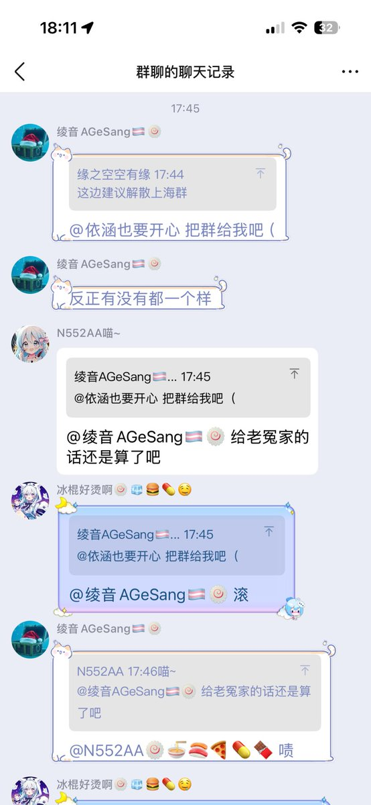
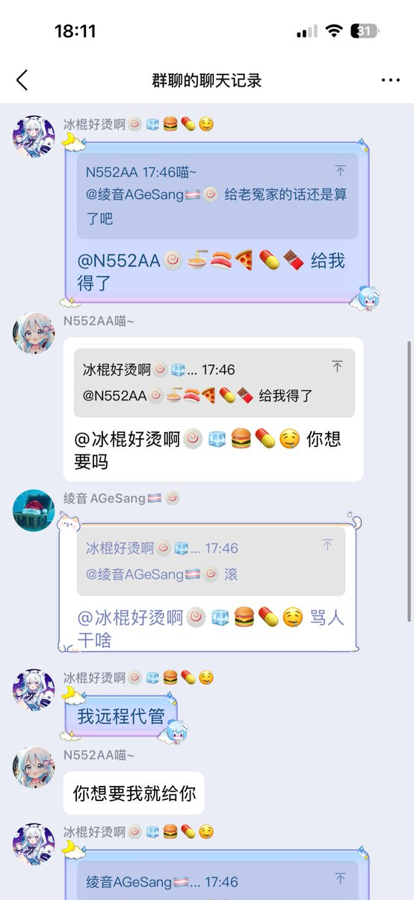
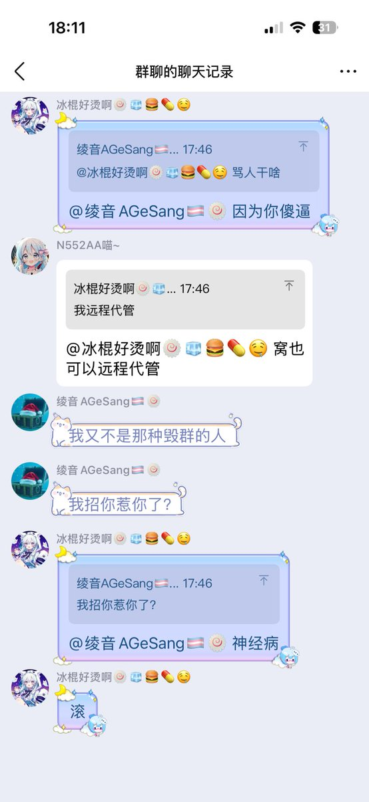

小虚空🍥
@tokerumaisurii
@AGeSang2008 我不知道你们的具体关系是什么，但要是我/我的朋友的老冤家随口要我/我的朋友把群转给ta，那我看到了会毫不犹豫地骂一句滚的。



绫音AGeSang🏳️⚧️🍥
@AGeSang2008
冰棍好烫喵，莫名其妙骂人，我看她被同学骂是自己咎由自取，因为她只会把自己最烂最暴力最负面的一面展现出来，她只有在对线骂人的时候才能展现自己的优越感，所以在她无言以对的时候才会破防如此之深，冰棍小姐，杠就是你赢，我不想多说什么，我只想阐述我认为的事实 https://t.co/G2rKLKVUNk